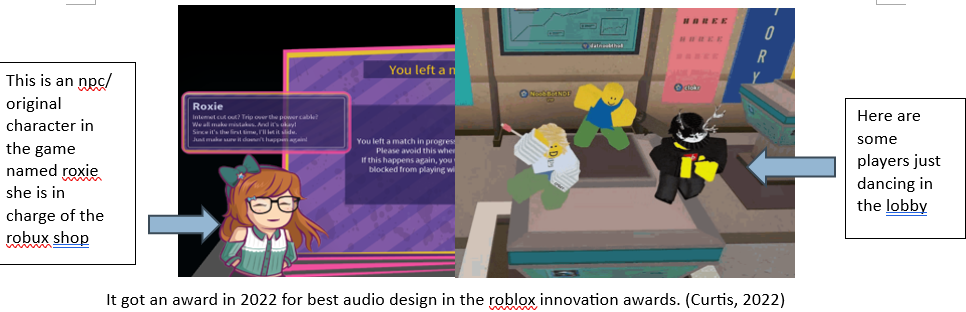
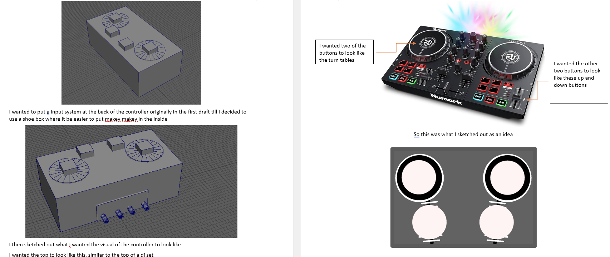
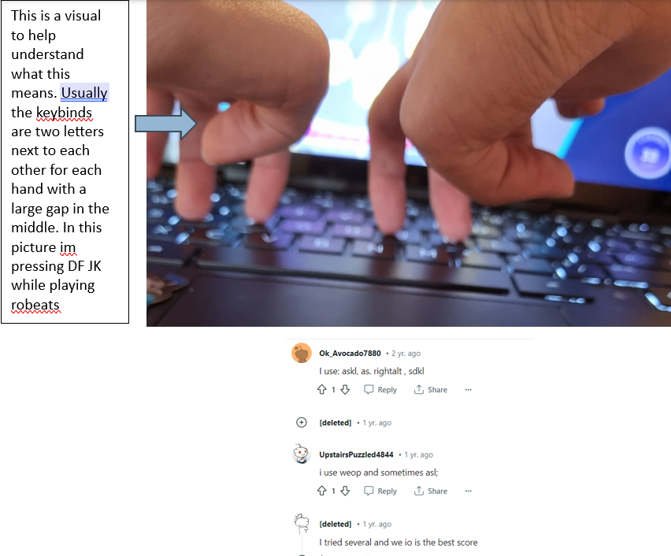
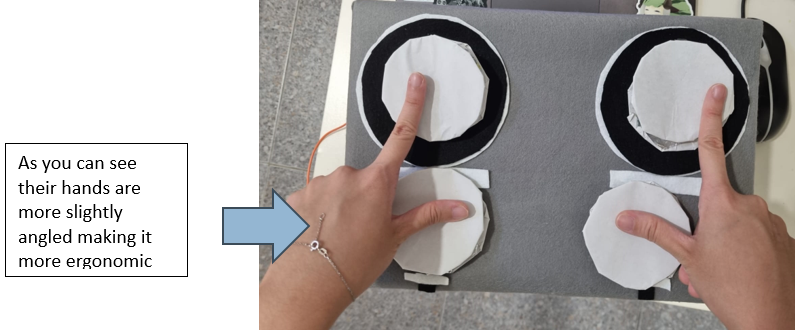
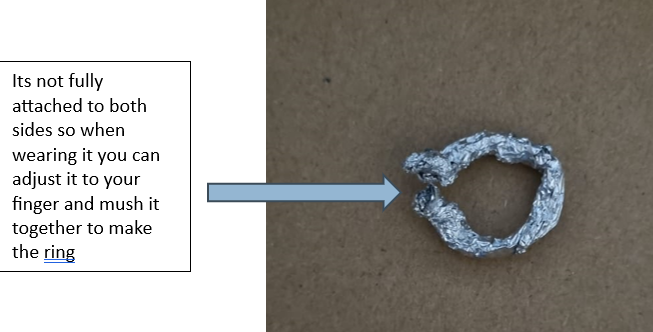
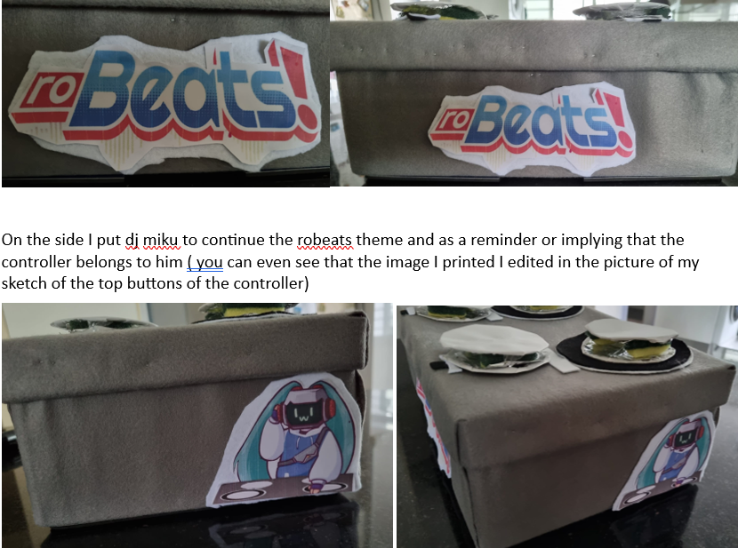
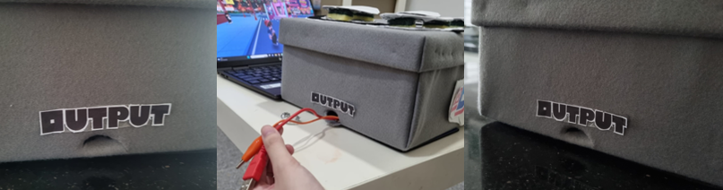

Created on 17 March 2018, Robeats is a MMORPG rhythm game, created by RoBeatsDev, on the website roblox. Its main gameplay feature is playing through a song, where you have to press the notes on time on the 4 button lane and to keep you accuracy and combo high.
It is both a single player game and a multiplayer game ( letting 4 players play together at a time ). You can play from original songs to songs from games to Vocaloid and other popular songs on the internet. You can also explore and dance around the lobby and interact with npc’s.
Me and my friends have been a fan of rhythm games for a while thus, we tried out the game together and we quite enjoy it, however over time we realize there are some issues with controls due to our keyboards, and some of them wish to have a dedicated controller for this game thus I decided to make a controller that makes the game easier to play and control, to fix those issues.
If you would like to see the full documentation and proposal done by me, click the buttons on the left, or click here, as I will show a summarised version of my documentation/proposal.
The target audience is for dedicated Robeats players who want a controller dedicated to playing robeats that improves on the user experience.
I did research into issues with robeats to see if I could learn or improve anything from, by looking into what fans of the game has to say about the negatives about the game. it.
I did research into Makey Makey so I can learn better about the product and could use that knowledge to better degree.
I performed a competitive analysis of rhythm game controllers similar to robeats gameplay layout and what I had in mind, I did a analysis on Divaller, I Pega, Gamo 2 Faucetwo Sound Vortex Controller, Pocket SDVX Pico v5, Synths lab solo Macropad, Phoenix Wan IIDX cntroller, which can all be seen in detail in the full proposal
The persona’s named, often plays robeats and other rhythm games during their free time thus I decided to interview them
I wanted my controller to look like a dj set, where the play buttons look like a record so it looks like your playing a song for the roblox avatar to dance too. ( for explanation, the avatar will start dancing if you are playing well in the game).
Additionally since there are a DJ character that queues in the next track you will play in the game, I wanted the controller to look like it may have belonged to the character in question
I started to model out how the rough controller would look like and started sketching ideas based on it, the other sketches can be seen in detail in the documentation/proposal.
In rhythm games like Robeats, fast-paced gameplay and hand-eye coordination are key thus, visibility of buttons is crucial as players risk losing their combo and scores if they miss a press. Most Robeats players, like my persona, use keyboards that are often fully grey or black, making buttons less eye-catching and reducing visibility.
To increase visibility, I opted for a bright color—white. Studies suggest that higher luminosity enhances contrast, making objects stand out more. This helps players quickly spot buttons during fast-paced gameplay, improving navigation efficiency.
Also looking from my research on controllers, an advantage that some controllers shared like the Divaller was that the buttons could light up making it easier to see, since I was not able to implement lights in my controller, this was the next best thing I could implement.
Additionally, since my controller is mostly grey and dark in color, the white buttons contrast well against the background of the controller housing to make it easier to distinguish between the buttons, reducing confusion during gameplay.
My persona mentioned to me that when they play robeats for long periods of time, their hands tend to cram because of the layout of their keyboard.
If they adjust the key binds to increase the distance between the buttons to try to make it more comfortable for the long run, it just makes it more difficult to keep up with the game, as players may realize they have to look over a larger area because of this change and with small monotone colored keys, players will have a harder time seeing where the key binds are.
Most robeats players including her uses key binds that have a gap in the middle but the two keys side to side
I realized that playing with these keybinds on the keyboard is not very ergonomic, as well as research showing that modern day keyboard layouts QWERTY is not ergonomic, stating“The QWERTY keyboard was not designed to be ergonomic. It has a high same-finger ratio, which increases strain. If you type constantly on the QWERTY keyboard, your chances of developing carpal tunnel syndrome are higher than with a more ergonomic layout.”
Therefore for my controller I decided to take inspiration from a more ergonomic keyboard named the alice style keyboard
Additionally, when looking at my research on controllers the Synths lab solo Macropad, one of its disadvantages is that since its small the distance between the buttons are small too, making it more crammed and harder to see where your pressing and making your hands feel uncomfortable
When playing with a controller, most of the time it tends to slip away easily when the player is too focused on the game, especially for rhythm game players who mostly focus on the screen, they may not realize their controller is sliping away and when pressing on where they thought the button was, they realize the controller has slid away, causing them to lose their focus, combo, and score in the game.
Additionally since looking at my research on controllers, this was also an advantage point from the Pocket SDVX Pico v5.
The buttons have a radius of 3.5cm and a diameter of 7cm, the area of the circle is 38.5cm²
I decided on larger buttons to enhance visual clarity for the controller. This improves players' ability to identify buttons quickly during fast-paced gameplay, increasing precision and accuracy. Compared to smaller keyboard keys, the larger buttons offer a larger surface area, making them easier to see and press accurately.
The larger buttons make the game more accessible to a wider audience as layers with different dexterity levels or larger hands may struggle or experience discomfort with smaller buttons. The increased target size of the larger buttons provides a solution, making the game more inclusive and accommodating for those who have difficulty with smaller buttons.
Additionally like stated earlier during my point about widening the distance within buttons, the wider surface area allows players to distribute the force across a larger portion of their fingers, minimizing the strain on specific joints or muscles.
The overall product looked like this
There is an aluminium inside of the controller, where it can be adjusted to any size of finge making it more accessable for those with smaller or larger fingers.
The front has the robeats logo, layers with white so it pops out more visually, and on the side dj Miku implying that the controller is from him as stated earlier
This is the output hole ( I used the roblox font for this text since robeats is a game on the roblox platform )
As shown earlier the rubber feet.
I decided to make the manual look like a set list to fit the dj theme, and to write the words as if DJ Miku ( the dj character in the game ) wrote this set list and is teaching the user how to start up the controller, in a set list of instructions. ( set lists are usually written down in pencil or pen on a piece of paper or use similar font to the one I chose, examples can be seen below)